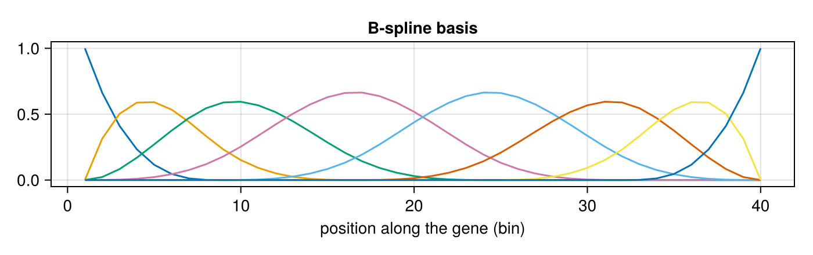
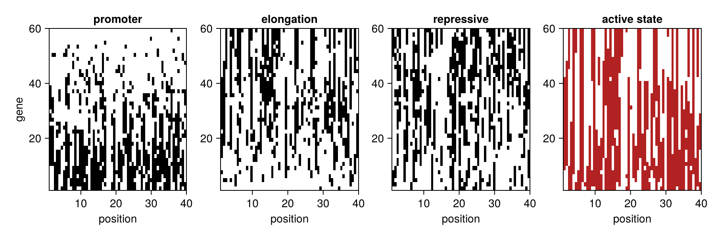
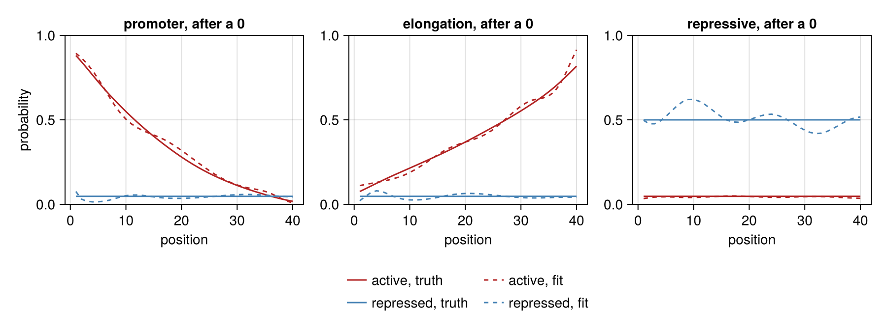
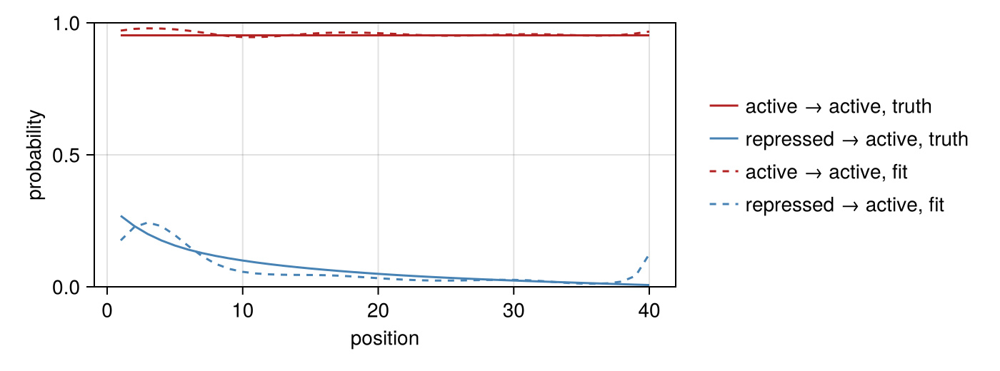
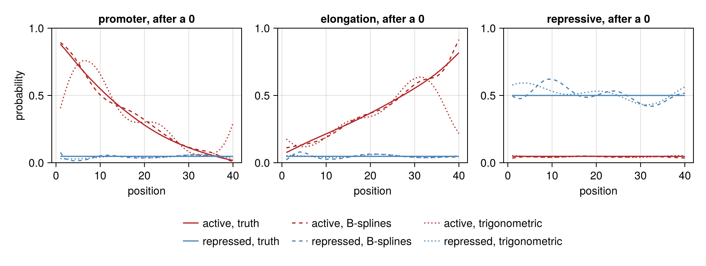

Chromatin states along genes
The data and the model are simulated, to illustrate the package. They do not represent any real biological system. Ideally, I'd like to show a real example.
The period index of a smooth HMM need not be a time in a cycle. Here it is a position along a gene, and the data are many short sequences, one per gene, rather than one long series.
Chromatin marks are chemical modifications of the histones that package DNA. Their presence, read by ChIP-seq and binarized per bin of a few hundred bases, is the input of ChromHMM, which segments the genome with an HMM whose emission is a product of independent Bernoullis: the emission of SmoothARPeriodicHMM with no memory. Along a gene the picture is not stationary: a promoter mark sits at the transcription start site (TSS), an elongation mark builds up towards the end, the 3' end.
A metagene view rescales every gene body to the same number of bins, from TSS to 3' end. Over that position the emission and transition probabilities are smooth curves, which are not periodic: the start of a gene does not wrap around to its end. A B-spline basis, rather than the trigonometric one, fits that.
All data below are simulated, from a toy model of three marks and two chromatin states.
using SmoothPeriodicStatsModelsusing Optimization, SimpleNonlinearSolve # loads the fitting routinesusing OptimizationOptimJL # the optimization algorithm, LBFGSusing Distributions, Random, Statisticsusing CairoMakiesolver = LBFGS() # every fit below takes its optimization algorithm explicitlyLBFGS{Nothing, LineSearches.InitialStatic{Float64}, LineSearches.HagerZhang{Float64, Base.RefValue{Bool}}, Returns{Nothing}}(10, LineSearches.InitialStatic{Float64}(1.0, false), LineSearches.HagerZhang{Float64, Base.RefValue{Bool}}(0.1, 0.9, Inf, 5.0, 1.0e-6, 0.6666666666666666, 50, 0.1, 0, Base.RefValue{Bool}(false), nothing, false), nothing, Returns{Nothing}(nothing), Optim.Flat(), true)A model on a B-spline basis
We observe $G$ genes, each gene body rescaled to $T = 40$ bins from the TSS to the 3' end. Gene $g$ gives the binary vectors $Y^{(g)}_n = (Y^{(g)}_{1,n}, \dots, Y^{(g)}_{D,n}) \in \{0, 1\}^D$, $n = 1, \dots, T$, where $Y^{(g)}_{j,n} = 1$ when mark $j$ is present in bin $n$. The genes are independent, and each follows the model of the HMM tutorial with the bin as period index, $t_n = n$, and a memory of order 1. Dropping the gene index,
\[\begin{aligned} \mathbb{P}(Z_1 = k) &= a_k, \\ \mathbb{P}(Z_{n+1} = l \mid Z_n = k) &= A_{kl}(n), \\ \mathbb{P}(Y_{j,n} = 1 \mid Z_n = k,\ Y_{j,n-1}) &= p_{kjh}(n), \qquad h = 1 + Y_{j,n-1}, \end{aligned}\]
where $Z_n \in \{1, \dots, K\}$ is the chromatin state of bin $n$, $Y_{j,0}$ is the bin upstream of the TSS, and, given $Z_n$ and $Y_{n-1}$, the $D$ marks of bin $n$ are independent. $a$, $A$ and $p$ are as in the HMM tutorial. Only the curves change: each is a combination of B-spline functions $b_1, \dots, b_{q+2}$ rather than a trigonometric polynomial (the bases guide lists the others),
\[P(t) = \sum_{i=1}^{q+2} c_i\, b_i(t), \qquad A_{kl}(t) = \frac{e^{P^A_{kl}(t)}}{\sum_{l'=1}^{K} e^{P^A_{kl'}(t)}}, \qquad p_{kjh}(t) = \operatorname{logistic}\big(P^B_{kjh}(t)\big),\]
with one curve $P^A_{kl}$ for each $k \in \{1, \dots, K\}$ and $1 \le l < K$, the reference $P^A_{kK} = 0$, and one curve $P^B_{kjh}$ for each state $k$, mark $j \in \{1, \dots, D\}$ and memory category $h \in \{1, 2\}$.
BSplineBasis(1, T, q) is a cubic B-spline basis over the positions 1:T with q equally spaced knots, q + 2 functions. The functions sum to one at every position, so constant coefficients give a constant curve, and coefficient $c_i$ mostly controls the curve around the $i$-th of $q + 2$ points spread over 1:T.
T = 40basis = BSplineBasis(1, T, 6)nb = nbasis(basis)begin X = design_matrix(basis, 1:T) fig = Figure(size=(700, 220)) ax = Axis(fig[1, 1], xlabel="position along the gene (bin)", title="B-spline basis") for i in 1:nb lines!(ax, 1:T, X[:, i]) end figend
Two states, active (transcribed) and repressed, and three marks:
- a promoter mark, frequent near the TSS of active genes;
- an elongation mark, rising towards the 3' end of active genes;
- a repressive mark, broad over repressed genes.
The curves are given on the logit scale, as the coefficients of $P^B_{kjh}$ in θᴮ[k, j, h, :] and of $P^A_{kl}$ in θᴬ[k, l, :]; each coefficient is roughly the curve at the corresponding point of the basis. Marks persist over neighbouring bins, which a memory of order 1 expresses: the success probability is higher after a 1 ($h = 2$) than after a 0 ($h = 1$). The probability of entering the active state is higher near the TSS.
K, D, order = 2, 3, 1marks = ["promoter", "elongation", "repressive"]x = range(0, 1, length=nb) # where each coefficient acts, in gene-body fractionlogit_curve = Dict( (1, 1) => @.(2.0 - 6x), # promoter, active: peaks at the TSS (1, 2) => @.(-2.5 + 4x), # elongation, active: rises to the 3' end (1, 3) => fill(-3.0, nb), # repressive, active: absent (2, 1) => fill(-3.0, nb), # promoter, repressed: absent (2, 2) => fill(-3.0, nb), # elongation, repressed: absent (2, 3) => fill(0.0, nb), # repressive, repressed: everywhere)θᴮ = zeros(K, D, 2^order, nb)for k in 1:K, j in 1:D θᴮ[k, j, 1, :] = logit_curve[(k, j)] # after a 0 θᴮ[k, j, 2, :] = logit_curve[(k, j)] .+ 2.0 # after a 1endθᴬ = zeros(K, K - 1, nb)θᴬ[1, 1, :] .= 3.0 # active → activeθᴬ[2, 1, :] = @.(-1.0 - 4x) # repressed → active: higher probability near the TSStruth = SmoothARPeriodicHMM([0.5, 0.5], θᴬ, θᴮ, T; basis_A=basis, basis_B=basis)SmoothARPeriodicHMM: 2 states, 3 sites, period 40, memory 1
transitions BSplineBasis([1.0, 8.8, 16.6, 24.4, 32.2, 40.0]; degree = 3), 16 coefficients
emissions BSplineBasis([1.0, 8.8, 16.6, 24.4, 32.2, 40.0]; degree = 3), 96 coefficientsSimulate genes
Each gene is one sequence, the T bins of the gene body at positions 1:T. The memory needs the bin upstream of the TSS, which is the initial condition Y_past; here no mark is present there.
Random.seed!(11)G = 300genes = map(1:G) do _ Y_past = zeros(Bool, D, order) z, Y = rand(truth, 1:T; Y_past, seq=true) (; z, Y, Y_past)endYs = [g.Y for g in genes]Y_pasts = [g.Y_past for g in genes]n2t = [collect(1:T) for _ in 1:G]begin fig = Figure(size=(900, 300)) for j in 1:D ax = Axis(fig[1, j], title=marks[j], xlabel="position", ylabel=j == 1 ? "gene" : "") heatmap!(ax, 1:T, 1:60, permutedims(reduce(hcat, [Ys[g][j, :] for g in 1:60])), colormap=[:white, :black]) end ax = Axis(fig[1, D+1], title="active state", xlabel="position") heatmap!(ax, 1:T, 1:60, permutedims(reduce(hcat, [genes[g].z .== 1 for g in 1:60])), colormap=[:white, :firebrick]) figend
Fit all genes at once
fit_mle(m, Ys, Y_pasts; solver, n2t) takes vectors of sequences. The genes are independent: the forward-backward pass restarts at each one, every gene starts from the initial distribution, and the M-step pools them. fit(SeasonalFit, …; solver) runs the same fit and keeps what the model comparison below needs.
The start knows which state is meant to be active but nothing of the positions: all curves are flat.
θᴮ₀ = zeros(K, D, 2^order, nb)θᴮ₀[1, 1:2, :, :] .= 0.0 # active: promoter and elongation marksθᴮ₀[1, 3, :, :] .= -2.0θᴮ₀[2, 1:2, :, :] .= -2.0 # repressed: the repressive markθᴮ₀[2, 3, :, :] .= 0.0θᴬ₀ = zeros(K, K - 1, nb)θᴬ₀[:, 1, :] .= [2.0, -2.0]m0 = SmoothARPeriodicHMM([0.5, 0.5], θᴬ₀, θᴮ₀, T; basis_A=basis, basis_B=basis)f_splines = fit(SeasonalFit, m0, Ys, Y_pasts; solver, n2t, maxiter=300, tol=1e-6)m = f_splines.modelf_splines.historyFitHistory: converged in 96 iterations, loglikelihood -13777.382parameters(m).A and parameters(m).B hold the fitted coefficients, one per B-spline function. The promoter mark in the active state, after a 0, on the logit scale:
(fit=round.(parameters(m).B[1, 1, 1, :]; digits=2), truth=round.(θᴮ[1, 1, 1, :]; digits=2))(fit = [2.13, 1.49, -0.22, -0.31, -1.27, -2.46, -2.4, -4.75], truth = [2.0, 1.14, 0.29, -0.57, -1.43, -2.29, -3.14, -4.0])ARPeriodicHMM(m) gives the probabilities at every position, which the plots below read.
function plot_marks(models, labels) fig = Figure(size=(900, 340)) axs = map(1:D) do j ax = Axis(fig[1, j], title=marks[j] * ", after a 0", xlabel="position", ylabel=j == 1 ? "probability" : "", limits=(nothing, (0, 1))) for (mod, label, style) in zip(models, labels, (:solid, :dash, :dot)) B = ARPeriodicHMM(mod).B lines!(ax, 1:T, succprob.(B[1, :, j, 1]); color=:firebrick, linestyle=style, label="active, " * label) lines!(ax, 1:T, succprob.(B[2, :, j, 1]); color=:steelblue, linestyle=style, label="repressed, " * label) end ax end Legend(fig[2, :], axs[1], orientation=:horizontal, nbanks=2, framevisible=false) return figendplot_marks([truth, m], ["truth", "fit"])
The transition probabilities, seen only through the state changes, are recovered too.
begin fig = Figure(size=(700, 260)) ax = Axis(fig[1, 1], xlabel="position", ylabel="probability", limits=(nothing, (0, 1))) for (mod, label, style) in zip((truth, m), ("truth", "fit"), (:solid, :dash)) A = ARPeriodicHMM(mod).A lines!(ax, 1:T, A[1, 1, :]; color=:firebrick, linestyle=style, label="active → active, " * label) lines!(ax, 1:T, A[2, 1, :]; color=:steelblue, linestyle=style, label="repressed → active, " * label) end Legend(fig[1, 2], ax, framevisible=false) figend
Decode
viterbi(m, Ys, Y_pasts; n2t) returns one state path per gene.
paths = viterbi(m, Ys, Y_pasts; n2t)mean(reduce(vcat, paths) .== reduce(vcat, [g.z for g in genes]))0.9644166666666667Why not a periodic basis?
A trigonometric polynomial joins the two ends of the gene body smoothly, as if position T were followed by position 1. Fitted with TrigBasis(T, 2), five coefficients per curve, the promoter mark drops at the TSS and comes back at the 3' end, and the elongation mark falls before the end. The two models are compared by BIC, -2 loglikelihood + dof × log(nobs), lower being better, where dof counts the coefficients and the $K - 1$ free initial probabilities, and nobs the bins, G × T.
trig = TrigBasis(T, 2) # the first coefficient is the constant termθᴬₜ, θᴮₜ = zeros(K, K - 1, 5), zeros(K, D, 2^order, 5)θᴬₜ[:, :, 1], θᴮₜ[:, :, :, 1] = θᴬ₀[:, :, 1], θᴮ₀[:, :, :, 1]mt0 = SmoothARPeriodicHMM([0.5, 0.5], θᴬₜ, θᴮₜ, T; basis_A=trig, basis_B=trig)f_trig = fit(SeasonalFit, mt0, Ys, Y_pasts; solver, n2t, maxiter=300, tol=1e-6)plot_marks([truth, m, f_trig.model], ["truth", "B-splines", "trigonometric"])
[(basis="B-splines", dof=dof(f_splines), bic=round(bic(f_splines); digits=1)), (basis="trigonometric", dof=dof(f_trig), bic=round(bic(f_trig); digits=1))]2-element Vector{@NamedTuple{basis::String, dof::Int64, bic::Float64}}:
(basis = "B-splines", dof = 113, bic = 28616.1)
(basis = "trigonometric", dof = 71, bic = 28666.8)This page was generated using Literate.jl.